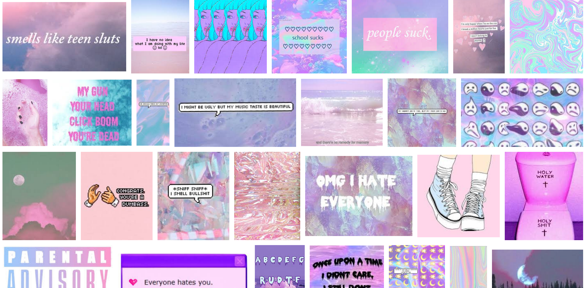
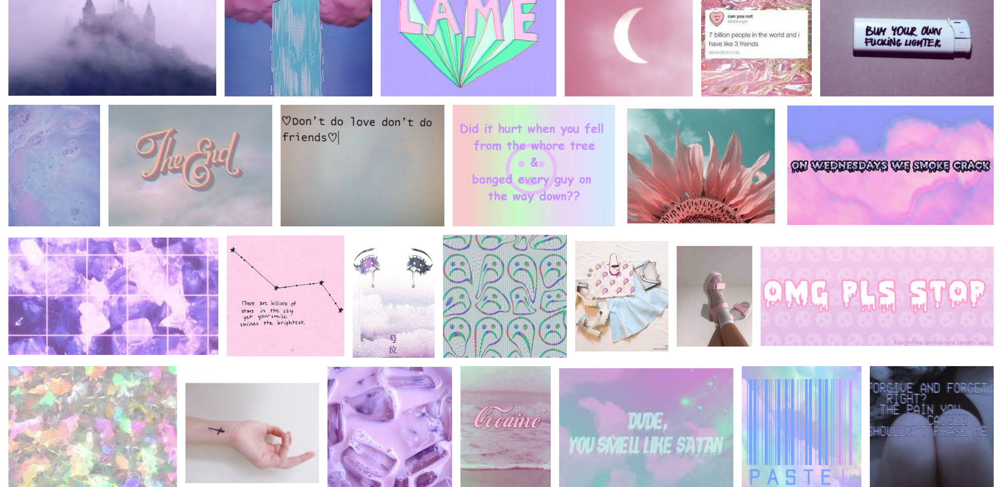
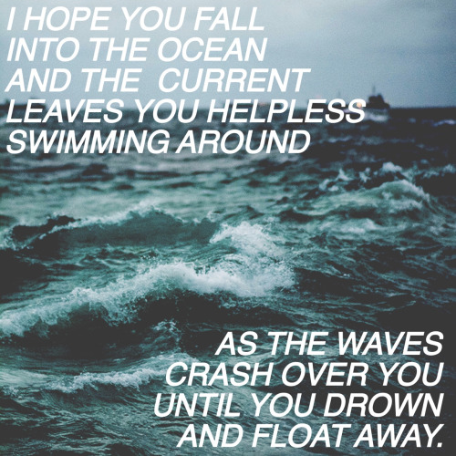
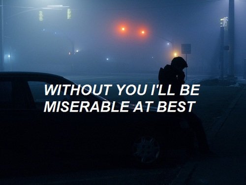
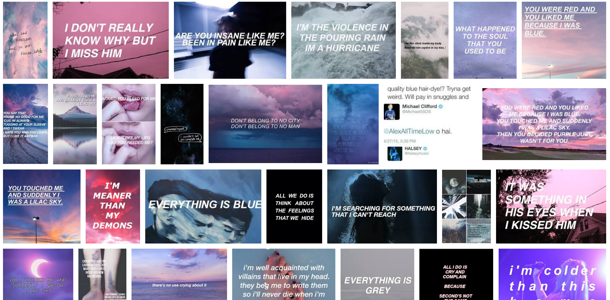

IDEA ONE - TUMBLR
Home


Soft Grunge Tumblr Style
- Ironic. Using the soft grunge tumblr aesthetic to make ~fake deep~ photos with the weirdest AOL searches
- While it looks all ~cute~ and deep, when you actually read the words, it makes it funny
- Juxtaposing serious/deep photos with the best AOL searches as though they're lyrics from emo music eg mayday parade, halsey lol


